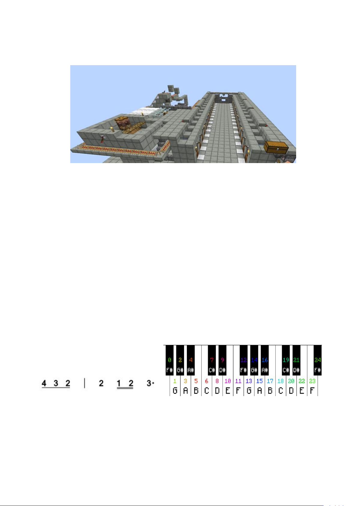

18.村民交易所是村庄机制与交易机制综合运用的机器，核心是用村庄规则定村民归属、用交
易规则换资源，高效稳定获取物资。下图是一种船吸村民交易所，下列说法正确的是
A.若提供食物后村民不进行繁殖，应解决床的寻路问题
B.使用运输船进行船吸，以确保一个交易坑位对应一个村民
C.在打折转化部分，村民被僵尸攻击直接死亡的可能原因是游戏模式为困难模式
D.某交易选项村民失效前可交易 16 次，则该村民在此交易选项处，每日最多交易 32 次
19.游戏开发技术是构建 Minecraft 世界的赋能者，为游戏拓展内容的创新筑牢信息科学基础。
下列说法正确的是
A.若多个资源包同时修改同一实体的材质,则它们不能共存
B.命令中通过 SNBT 文本形式的中介间接修改相应 NBT 数据
C.基岩版专用服务器不支持加载模组。LeviLamina 加载器中 plugins 文件夹存放模组
D.使用 MCEdit 删除某一生物群系时,Cautious 模式删除的范围比 Aggressive 模式更大
20.图 1 为某玩家制作的一段红石音乐的旋律。下文为红石音乐的资料。下列说法正确的是
材料一 在简谱中，没有下划线的音符为四分音符，有一条下划线的音符为八分音符，两条
下划线的为十六分音符。附点能延长原音符的 50%时间。
材料二 通过调节音符盒的属性：音高、音色，可改变奏出的声音；改变音符盒所连接的中
继器的延迟，即可设置音符的时值。音符盒可通过右键调音。在默认状态下，音符盒发出的
音高为 F#，每次调音会提高半音，如调到第 6 次时为 C 调的 do。图 2 展示了音符盒调到各
个音高所需的右键调音次数，其音域为两个八度。
图 1 图 2
A.在音符盒下放置不同的方块，可改变音符盒的音色
B.搭配使用红石比较器的减法模式收束各个音符盒的红石信号
C.若将某红石音乐的 BPM（每分钟节拍数）从 75 更改为 96，需在聊天栏输入/tick rate 25.6
D.若 4 档中继器延迟为一个八分音符持续时间，则图 1 简谱最后三个音持续时间为 16gt